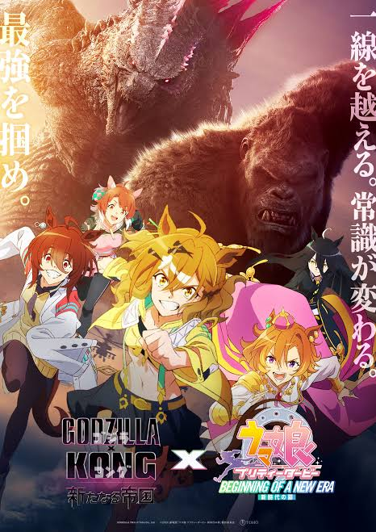

PvP de clava
Curto batalhar no PvP usando clava.
MINECRAFTSEU PRÓXIMO DESTINO
Escolha um projeto para explorar os detalhes.
Nesse Projeto eu tive que fazer um site de cinema aonde eu fiz 10 perguntas que ao serem respondidas diziam qual filme a pessoa mais provavelmente goste
Essa foi uma Resenha das boas eu criei um site aonde eu era possivel "comprar" auras de outros personagens como a do Piccolo ou a do Sung Jin Woo
Nesse Projeto eu criei um site de viagem onde os usuários podiam explorar diferentes destinos e planejar suas viagens.
Clique em um projeto para abrir a sinopse.
JOGADOR 001 • APRESENTAÇÃO
Oi! Eu sou o Italo Renan.
Tenho 15 anos e gosto de explorar universos diferentes — dos games e animes até música e novas ideias. Este portfólio é meu cantinho para compartilhar um pouco do que curto e do que estou criando.
INVENTÁRIO DE INTERESSES
.jpg) 01Blue Lock
01Blue LockNesse anime varios atacantes são selecionados para participar de um projeto chamado blue lock para criar o melhor atacante do japão
.jpg) 02Músicas Geeks
02Músicas GeeksMusicas geeks mesmo que possam parecer estranhas para mim são boãs e eu gosto de ver como os artistas interpretam os personagens
.jpg) 03Persona
03PersonaExistem varios Personas com habilidades unicas mas na maioria é um jogo de rpg que abordar ate temas um pouco mais pessados mas ainda assim o jogo é incrivel

04UmamusumeEsse anime aonde existem garotas cavalos não é apenas algo estranho de japoneses esse anime é principalmente uma homenagem aos cavalos japoneses e serve para contar as suas historias em anime. Irei resumir a melhor serie deles ate agora em minha opinião o Cinderella Gray que conta a historia da Oguri Cap que de começo começa a correr em uma escola de corrida Regional e nela ele conhece varias pessoas seu treinador e a Dantatsu Flame que sera a principal amiga dela em toda a serie apois Oguri Cap receber uma proposta da Symbol Rudolf para ela ir para a Tracen a melhor escola de corrida de Umas e que ela iria participar de corridas estaduais e apois uma despedida do seu treinador ela vai para Tracen aonde ela enfrenta mais desafios em destaque Tamamo Cross que é a principal rival de Oguri Cap a vencendo varias vezes mas no fim apois as 2 alcançarem a zona aonde é um estado aonde o corpo e mente reagem juntos Oguri Cap vence e se tornar a melhor garota do cavalo do japão e então vamos para o manga e nele Oguri Cap descobre que ela tera que aposentar pela sua perna que estava ruim e então temos varias corridas de despedidade de Oguri Cap com varias de suas rivais ate que ela se aposenta. Agora vamos para o filme Begging of the new era nele conhecemos Jungle Pocket que obviamente sonha em ser a melhor Uma do mundo porem ela encontra um desafio Agnes Tachyon que a vence 3 vezes sem dar nenhuma chance pra Jungle Pocket e vem a noticia que Agnes iria parar de corre por tempo inderterminado e quando Jungle Pocket vai confrontar ela Agnes fala que quem vão alcancar o topo são eles e então temos varias corridas com Jungle Pocket tendo que aceitar que no fim ela nunca vai conseguir superar sua rival Agnes Tachyon mas no fim temos com Jungle Pocket superando isso e Agnes Tachyon apois ver a corrida de Jungle Pocket se motiva a querer alcançar o topo com suas proprias pernas com no fim do filme ela voltando a correr, No filme Umamusume: Pretty Derby Road to the top conhecemos Narina Top Road que como todas as outras sonha em ser a melhor e conhecemos o passado dela sendo que ela foi treinada por um treinador local que a ensinou tudo e a levou para escola Tracen la ela tem varias rivais como TM Opera.O e Admire Vega que em seu passado Admire Vega deveria ter uma gemeâ porem no fim os medicos tiveram que escolher entre ela ou a outra e no fim foi ela e Vega se culpa por isso e transformando ela em um motivo pra correr pra provar que ela estar viva valeu a pena porem ela transforma essa moivação em como uma punição por ela estar viva e em si Top Road e Vega tem varios problemas durante o filme retirando Opera ela é simplesmente a Goat desse filme enfim logo apois Top Road perder varias corridas ela fica pensando que esta decepcioando as pessoas que acreditam nela e que daqui a pouca essas pessoas vão desistir dela porem o treinador dela faz ela mudar de ideia e ela fica bem diferente de Vega que isola de tudo enquanto tem alucinações com a sua irmã e que ela fala que a proxima corrida dela seria a ultima das duas juntas e então na corrida por causa de um machucado na perna Vega acaba não conseguindo fazer nada enquanto Top Road e Opera vão correndo e Vega tem tipo uma "visão" com a irmã antes de sumir pedindo para ela correr e se divirtar e diz que correr junto dela foi muito divertido com isso acabando essa "punição" de Vega e o filme acaba com Top Road vencendo a corrida e junto de Vega e Opera se tornam o topo das corredoras dessa era
.jpg) 05Minecraft
05MinecraftMinecraft pra mim é um jogo que me permite criar e construir em mundos infinitos e desfrutas completamente da minha criatividade
.jpg) 06Jogos
06JogosOs jogos me levaram para conhecer varios mundos desde de um cowboy que busca redenção ate um Deus tendo que enfrentar outros Deuses no Ragnarok
MEU KIT DE HABILIDADES
Coisas que sei fazer e que continuo desenvolvendo.
Curto batalhar no PvP usando clava.
MINECRAFTTenho facilidade para digitar rápido.
AGILIDADEConsigo colocar o pé na cabeça.
FLEXIBILIDADEConheço vários sites úteis para ajudar no desenvolvimento de código.
DESENVOLVIMENTO